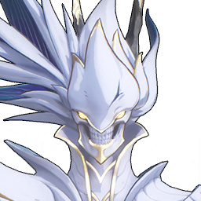

Crownless

Element: Havoc
The Whisperin Tacet Discord that appears outside the Gorges of Spirits is fierce and aggressive, with a strong offensive nature. More information is to be further supplemented, and the known danger level belongs to the Overlord Class.